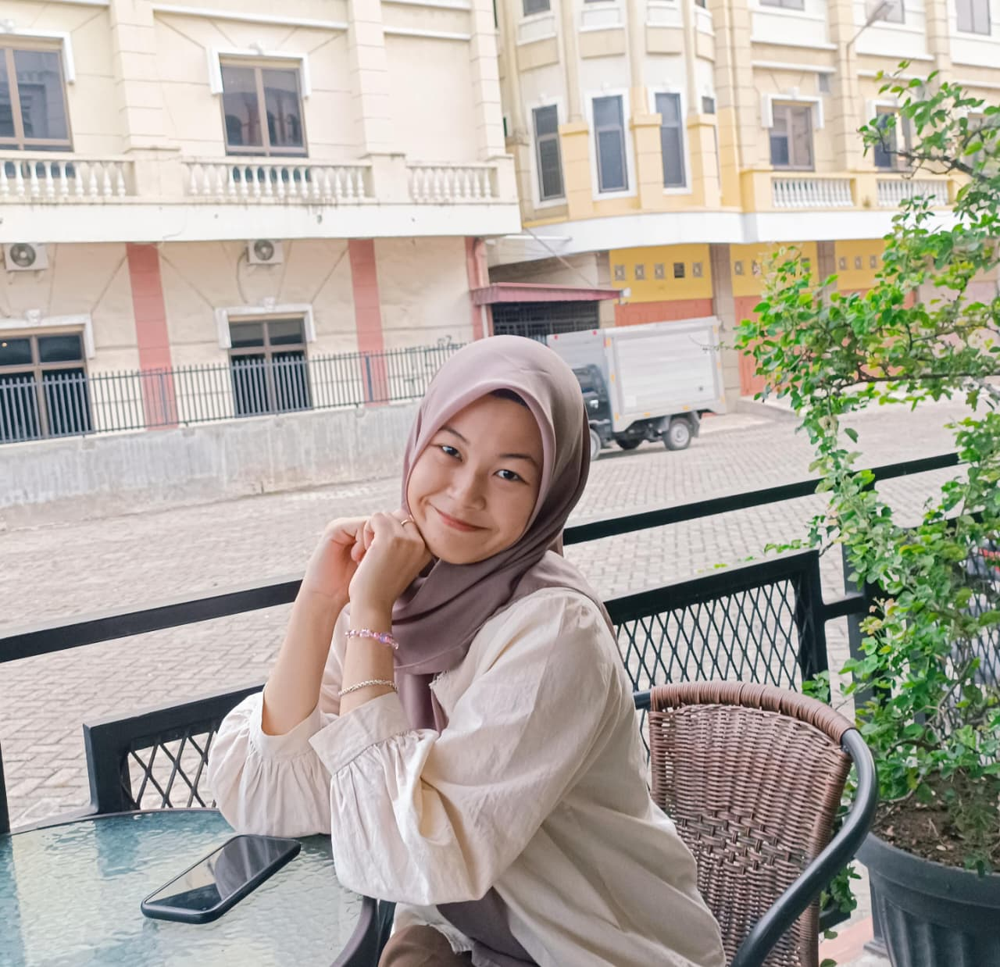
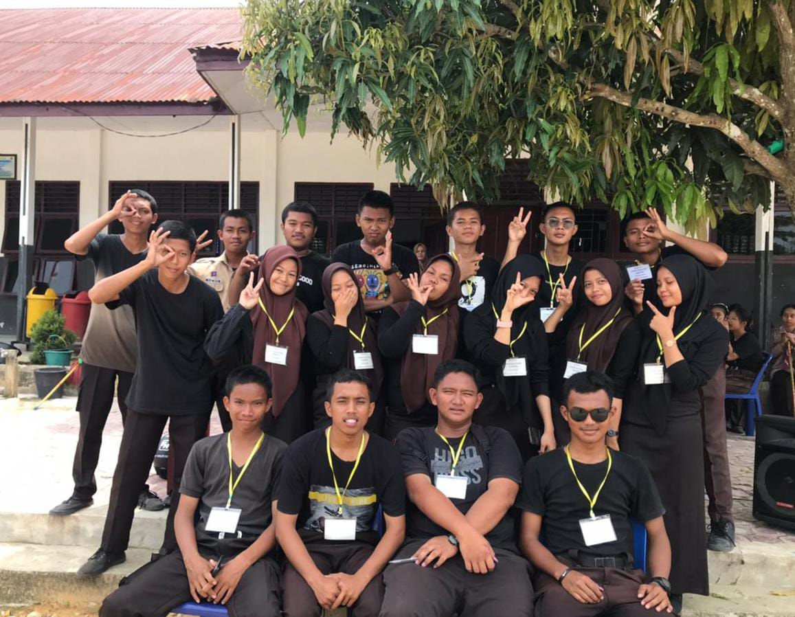
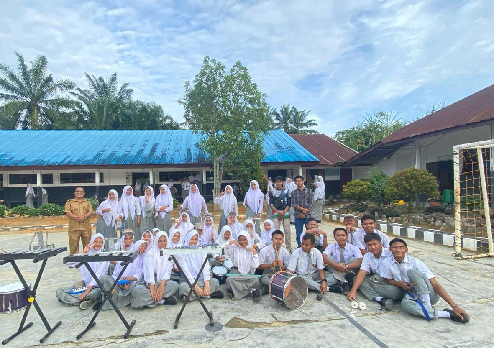
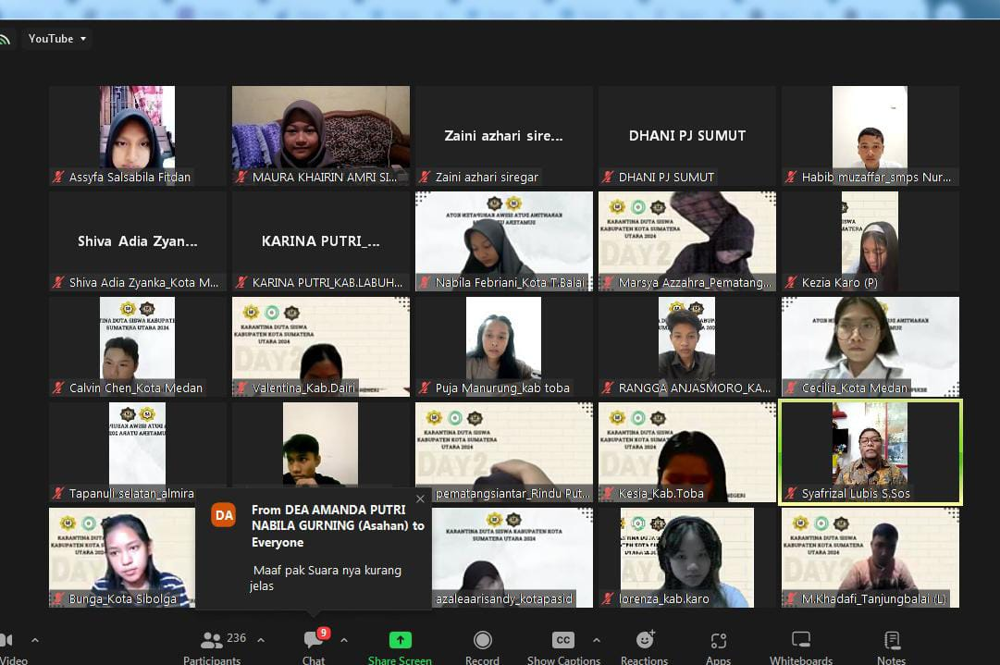

About Me

Maura Khairin
Mahasiswa (18 Tahun)
Lokasi: Sumatera Utara, Indonesia
Halo, saya Maura Khairin Amri Simatupang, seorang mahasiswa tahun pertama di program studi Ilmu Komputer, Universitas Negeri Medan.
Sebagai mahasiswa baru yang penuh rasa ingin tahu, saya sedang mengeksplorasi dunia desain grafis dan pemrograman dengan antusiasme yang tinggi. Portofolio ini adalah langkah pertama saya dalam mendokumentasikan setiap perjalanan belajar, eksperimen kreatif, dan pencapaian-pencapaian kecil yang saya miliki.
Meskipun baru memulai, saya percaya bahwa semangat belajar dan kemauan untuk terus berkembang adalah kunci dalam menghasilkan karya yang bermakna.
Education
- SD Negeri 117876 Torgamba (2013 - 2019)
- SMP Negeri 6 Torgamba (2019-2022)
- SMA Negeri 1 Torgamba (2022-2025)
Experience
- Menjadi bagian OSIS (bendahara) yang membangun karakter tanggung jawab dan jujur.
- Duta siswa putri kabupaten Labuhanbatu selatan yang menambah rasa percaya diri.
- Anggota PDBI yang mengembangakan sikap kerja sama tim.
- Menguasai penggunaan canva dalam pembuatan desain grafis seperti poster, logo, dan konten media sosial.


